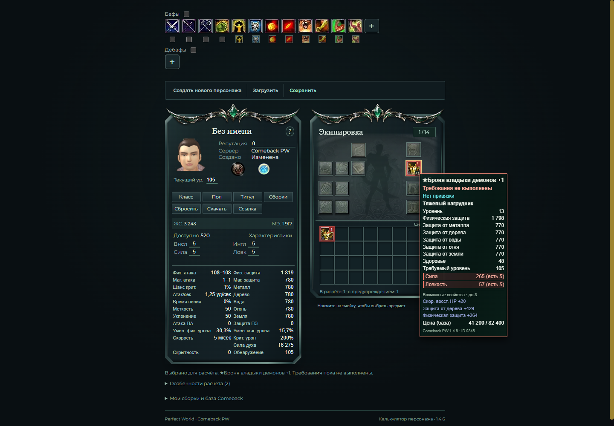
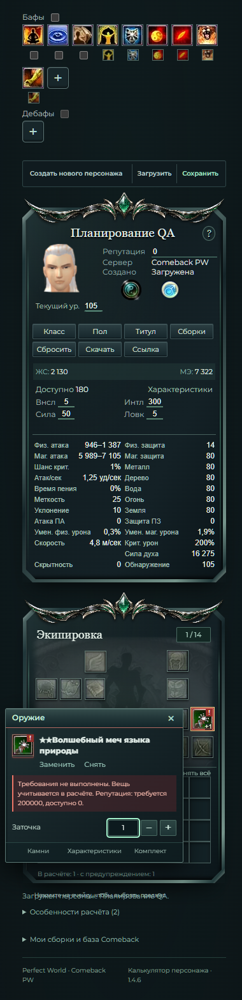

Режим планирования экипировки
Калькулятор Comeback PW 1.4.6 позволяет выбирать вещи для будущей сборки. Невыполненные требования подсвечиваются красным; все поддержанные бонусы выбранных вещей участвуют в расчёте.
CSV с теми же результатами · Описание текущего поведения · Историческая проверка строгого режима
Уточнение пользователя: «Как mypers: выбирать вещи для расчёта, а невыполненные требования подсвечивать красным». Предыдущий строгий запрет заменён предупреждениями. Требования проверяются с бонусами остальных выбранных вещей, без собственного бонуса проверяемого предмета.
PASS — есть результат запущенной проверки. Все перечисленные проверки завершены. Высокая важность отмечает расчёт и выбор экипировки, средняя — совместимость и дополнительные сценарии.
Результаты
| Область | Статус | Важность | Что проверено | Ограничения |
|---|---|---|---|---|
| Режим планирования | PASS | Высокая | Любая структурно подходящая ячейке вещь выбирается для расчёта при невыполненных требованиях. Убраны блокировка строки, aria-disabled и запрет в обработчике выбора. | Красная индикация означает предупреждение; правила ячеек, камней и допустимых свойств сохранены. Все поддержанные бонусы выбранных вещей участвуют в расчёте. |
| Броня 9345: выбор мышью | PASS | Высокая | На http://127.0.0.1:8000/ при четырёх атрибутах по 5 и репутации 0 броня выбирается обычным нажатием мыши. Физическая защита: 1819 вместо 3 без брони. | Требования Сила 265 / Ловкость 57 остаются красными. Это запланированная сборка, а не подтверждение возможности надеть вещь в игре. |
| Броня 9345: заточка | PASS | Высокая | Выбранная броня с невыполненными требованиями учитывает заточку +1: здоровье 3243 вместо 3195 до заточки. | Проверено на текущем локальном приложении, порт 8000. |
| Меч 12647: клавиатура | PASS | Высокая | Маг с атрибутами по 5 и репутацией 0 выбирает меч клавишей Enter. Магическая атака: 1383–1665 вместо 110–110 без оружия. | Репутация 200000 / Сила 50 / Интеллект 300 выделены как невыполненные требования. |
| Переход через требование репутации | PASS | Высокая | При Силе 50, Интеллекте 300 и репутации 200000 предупреждение меча исчезает. При возврате репутации к 0 предупреждение появляется вновь, магическая атака остаётся 5268–6344. | Снижение репутации меняет предупреждение и не отключает бонусы выбранного предмета. |
| Меч 12647: заточка | PASS | Высокая | У выбранного меча заточка +1 повышает магическую атаку с 5268–6344 до 5372–6448 при невыполненной репутации. | Проверено на порту 8000 при Силе 50 и Интеллекте 300. |
| Поддержанные выбранные бонусы | PASS | Высокая | Автотест проверяет сохранение бонусов вещи, заточки, камня, постоянного свойства и выбранного дополнительного свойства при недостатке репутации. | Применение поддержанных бонусов подтверждено автотестом и браузерными примерами. Ранее неподдержанное свойство «Крит +4%» по-прежнему честно перечисляется в предупреждениях; каталог и парсер свойств не менялись. |
| Контекст требований | PASS | Высокая | Требования проверяются с бонусами всех остальных выбранных вещей. Собственный бонус проверяемого предмета исключён. Цепочки, взаимная поддержка и порядок ключей сборки покрыты тестами. | Невыполненные требования других вещей не исключают их бонусы из планируемой сборки. |
| Эффекты оружия | PASS | Высокая | Выбранное оружие включает состояния, которым требуется оружие, даже при красном предупреждении требований. Это проверено отдельным автотестом. | Правила доступности самих умений текущему классу сохраняются. |
| Репутация и формат сохранений | PASS | Средняя | Механизм числового ввода и формат сборки v1 не изменялись. Автотесты подтверждают числовую репутацию, отклонение неверных значений и репутацию 0 для старого сохранения. В браузере ввод буквы «a» с клавиатуры не меняет число; сохранение и загрузка восстановили репутацию 200000. | Повторная проверка текущего интерфейса на порту 8000 подтвердила сохранённое поведение. Расширенная матрица некорректных значений покрыта неизменёнными автотестами. |
| Дополнительное свойство через интерфейс | PASS | Высокая | На порту 8000 у меча 12647 +1 с Ледяным камнем 2004 и репутацией 0 выбор свойства «Интеллект +15» повысил магическую атаку с 5772–6848 до 5989–7105. | Сохранились красное требование репутации и учёт поддержанного свойства. Неподдержанные свойства не обещаются как учтённые. |
| Данные и ограничения 1.4.6 | PASS | Высокая | Проверка diff: каталог предметов и камней Comeback 1.4.6, основные формулы, десять классов и ранее согласованные исключения не изменены. | Не добавлялись карты, чат, сторонние мини-окна, современные классы, боевой дух и исключённые современные умения. Это проверка отсутствия изменений, не повторная сверка каждой записи с игрой. |
| Автоматические проверки | PASS | Высокая | После интеграции выполнено 52 Python + 75 JavaScript = 127 тестов, все прошли. Django check: 0 issues. Ruff, node --check и git diff --check: PASS. Консоль браузера: 0 ошибок и предупреждений. | Фактические команды: .\.venv\Scripts\python.exe -m pytest -q; npm.cmd test; .\.venv\Scripts\python.exe manage.py check; .\.venv\Scripts\python.exe -m ruff check .; node --check static/js/app.js; node --check static/js/equipment-ui.js; git -c safe.directory=F:/PW_Calc diff --check. Полный запуск выполнен основным исполнителем. Независимые 32 теста входят в общий набор и не прибавляются к 127. |
| Обновлённый сервер 8000 | PASS | Высокая | Старый процесс держал шаблон в памяти. Подтверждённый сервер проекта перезапущен: браузер получает app.js?v=20261103-planning и новую справку. После перезапуска повторный выбор брони 9345 обычным нажатием дал физическую защиту 1819, импорт полного плана — магическую атаку 5989–7105. | Проверки фактически выполнены основным исполнителем на http://127.0.0.1:8000/ после перезапуска сервера. |
| Независимый просмотр | PASS | Средняя | Проверены соответствие новому правилу, отсутствие запретов выбора, расчёт всех выбранных бонусов, собственные и взаимные атрибуты, репутация, совместимость и осмысленность обновлённых тестов. Блокирующих замечаний нет. | Проверка Claude владельцем PR остаётся отдельным этапом. Общий браузер и полный набор тестов независимый проверяющий повторно не запускал. |
| Сохранение и повторная загрузка | PASS | Средняя | Сохранение в браузере → новый персонаж → загрузка сохранило меч 12647 +1 с камнем 2004, репутацию 0, красное предупреждение и атаку 5772–6848. Экспорт JSON и повторный импорт сохранили также выбранное свойство «Интеллект +15» и атаку 5989–7105. | Проверены реальные действия на порту 8000. Отдельное сохранение репутации 200000 → новый персонаж → загрузка вернуло 200000. Старый файл и ссылка проверены отдельно. |
| Камень через интерфейс | PASS | Высокая | На порту 8000 у Мага с мечом 12647 +1, Силой 50, Интеллектом 300 и репутацией 0 вставка Ледяного камня 2004 повысила магическую атаку с 5372–6448 до 5772–6848. | Проверена вставка через интерфейс у вещи с невыполненной репутацией. Повторная замена и снятие камня пока отдельно не проверялись. |
| Старый файл и ссылка | PASS | Средняя | Старый JSON без поля reputation импортирован через интерфейс: репутация 0, меч 12647 сохранился, магическая атака 5268–6344, требование репутации красное. Действие «Ссылка» → новый персонаж → переход по ссылке восстановило то же состояние. | Проверено в браузере на порту 8000. Формат сборки остаётся v1; репутация в новом формате — число. |
| Пять ширин экрана | PASS | Средняя | На текущей версии проверены ширины 360 / 390 / 719 / 720 / 1440 px. Горизонтального переполнения нет, редактор шириной 280 px находится внутри экрана, предупреждение о требованиях видно. | Проверены эти конкретные размеры. Мобильный снимок сохранён в screenshots/equipment-planning-mobile.png. |
| Уменьшение анимации | PASS | Средняя | В обычном режиме псевдоэлемент ::after использует equipment-unusable-pulse с периодом 1,6 с. При prefers-reduced-motion вычисленные значения: animation none, opacity 1; красный класс предупреждения сохраняется. | Подтверждено в браузере на текущей версии. Уменьшение движения не скрывает предупреждение. |
Снимок локальной проверки

